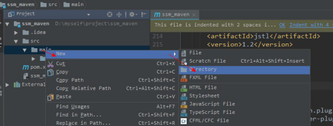
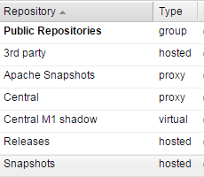

项目管理工具 maven一、 回顾[理解]1. Maven 的好处2. 安装配置 maven3. 三种仓库4.常见的命令5.坐标的书写规范6.如何添加坐标7.依赖范围二、 maven 构建 SSM 工程[应用]1.需求2.准备数据库3.创建一个 maven 工程4.知识点准备4.1什么是依赖传递4.2依赖冲突的解决5.定义 pom.xml6.Dao 层6.1pojo 模型类6.2dao 层代码6.3配置文件6.4单元测试7.Service 层7.1代码7.2配置文件8.Web 层8.1代码8.2配置文件9.Jsp10.运行与调试三、分模块构建工程[应用]1.需求需求描述2.案例实现2.1 maven-parent 父模块2.2ssm_dao 子模块2.3ssm_service 子模块2.4ssm_web 子模块四、maven 私服[了解]1.需求2.分析3.搭建私服环境3.1下载 nexus3.2安装 nexus3.3卸载 nexus3.4启动 nexus3.5仓库类型4.将项目发布到私服4.1需求4.2配置4.3测试5.从私服下载 jar 包5.1需求5.2管理仓库组5.3在 setting.xml 中配置仓库5.4测试从私服下载 jar 包五、把第三方 jar 包放入本地仓库或私服1.导入本地库2.导入私服3.参数说明
项目管理工具 maven
一、 回顾[理解]
1. Maven 的好处
- 节省磁盘空间
- 可以一键构建
- 可以跨平台
- 应用在大型项目时可以提高开发效率
2. 安装配置 maven
注意：3.3+版本需要jdkj.7+以上的支持
3. 三种仓库
- 本地仓库
- 远程仓库（私服）
- 中央仓库
4.常见的命令
- Compile
- Test
- Package
- Install
- Deploy
- Clean
5.坐标的书写规范
groupId 公司或组织域名的倒序artifactId 项目名或模块名version 版本号
6.如何添加坐标
- 1、在本地仓库中搜索
- 2、互联网上搜，推荐网址 http://www.mvnrepository.com/
7.依赖范围
- Compile
- Test
- Runtime
- Provided
二、 maven 构建 SSM 工程[应用]
1.需求
实现 SSM 工程构建，规范依赖管理。场景：根据 id 展示商品信息
2.准备数据库
导入以下语句
3.创建一个 maven 工程
1、新建一个ssm_maven 项目,使用下图选中的骨架 2、填写坐标 3、查看是否使用的自己的私服 5、在main 目录下新建 java 和resources 文件夹  6、把java 和resources 文件夹转成source root 7、修改编译版本，在pom.xml 文件中添加
4.知识点准备
4.1什么是依赖传递
先添加 springmvc 的核心依赖的坐标
会发现出现除了 spring-webmvc 以外的其他 jar。因为我们的项目依赖spring-webmv.jar，而spring-webmv.jar 会依赖spring-beans.jar 等等，所以 spring-beans.jar 这些 jar 包也出现在了我们的 maven 工程中，这种现象我们称为依赖传递。从下图中可看到他们的关系：（请注意 spring-beans 的版本）

4.2依赖冲突的解决
接着添加一个依赖
 我们会发现这两个jar 包同时都依赖了 spring-beans
我们会发现这两个jar 包同时都依赖了 spring-beans
 但是
spring-webmvc 依赖 spirng-beans-4.2.4，spring-context 依赖 spring-beans-5.0.2，但是发现spirng-beans-4.2.4 加入到工程中
而我们希望 spring-beans-5.0.2 加入工程。这就造成了依赖冲突。解决依赖冲突有以下原则：
4.2.1依赖调解原则
maven 自动按照下边的原则调解：
但是
spring-webmvc 依赖 spirng-beans-4.2.4，spring-context 依赖 spring-beans-5.0.2，但是发现spirng-beans-4.2.4 加入到工程中
而我们希望 spring-beans-5.0.2 加入工程。这就造成了依赖冲突。解决依赖冲突有以下原则：
4.2.1依赖调解原则
maven 自动按照下边的原则调解：
- 1、第一声明者优先原则 在pom 文件定义依赖，先声明的依赖为准。 测试： 如果将上边 spring-webmvc 和 spring-context 顺序颠倒，系统将导入 spring-beans-5.0.2。 分析： 由于 spring-webmvc 在前边以 spring-webmvc 依赖的 spring-beans-5.0.2 为准，所以最终spring-beans-5.0.2 添加到了工程中。
- 2、路径近者优先原则
例如：还是上述情况，spring-contex 和 spring-webmvc 都会传递过来 spirng-beans，那如果直接把 spring-beans 的依赖直接写到 pom 文件中，那么项目就不会再使用其他依赖传递来的 spring-beans，因为自己直接在 pom 中定义 spring-beans 要比其他依赖传递过来的路径要近。
在本工程中的 pom 中加入 spirng-beans-5.0.2 的依赖，根据路径近者优先原则，系统将导入
spirng-beans-5.0.2：
4.2.2排除依赖
上边的问题也可以通过排除依赖方法辅助依赖调解，如下：
比如在依赖 spring-webmvc 的设置中添加排除依赖，排除spring-beans，
下边的配置表示：依赖 spring-webmvc，但排除 spring-webmvc 所依赖的 spring-beans。
4.2.3锁定版本
面对众多的依赖，有一种方法不用考虑依赖路径、声明优化等因素可以采用直接锁定版 本的方法确定依赖构件的版本，版本锁定后则不考虑依赖的声明顺序或依赖的路径，以锁定 的版本的为准添加到工程中，此方法在企业开发中常用。
如下的配置是锁定了 spring-beans 和 spring-context 的版本：
还可以把版本号提取出来，使用
标签设置成变量。 注意：在工程中锁定依赖的版本并不代表在工程中添加了依赖，如果工程需要添加锁定版本的依赖则需要单独添加 标签，如下： 上边添加的依赖并没有指定版本，原因是已在 中锁定了版本，所以在 下不需要再指定版本。
5.定义 pom.xml
maven 工程首先要识别依赖，web 工程实现 SSM 整合，需要依赖 spring-webmvc5.0.2、spring5.0.2、mybatis3.4.5 等，在pom.xml 添加工程如下依赖：
（在实际企业开发中会有架构师专门来编写pom.xml） 分两步：
- 1）锁定依赖版本
- 2）添加依赖
x <project xmlns="http://maven.apache.org/POM/4.0.0" xmlns:xsi="http://www.w3.org/2001/XMLSchema-instance"xsi:schemaLocation="http://maven.apache.org/POM/4.0.0 http://maven.apache.org/xsd/maven-4.0.0.xsd"> <modelVersion>4.0.0</modelVersion> <groupId>cn.itcast.ssm_maven</groupId> <artifactId>ssm_maven</artifactId> <version>1.0-SNAPSHOT</version> <packaging>war</packaging> <properties> <spring.version>5.0.2.RELEASE</spring.version> <springmvc.version>5.0.2.RELEASE</springmvc.version> <mybatis.version>3.4.5</mybatis.version> </properties> <!--锁定依赖版本--> <dependencyManagement> <dependencies> <!-- Mybatis --> <dependency> <groupId>org.mybatis</groupId> <artifactId>mybatis</artifactId> <version>${mybatis.version}</version> </dependency> <!-- springMVC --> <dependency> <groupId>org.springframework</groupId> <artifactId>spring-webmvc</artifactId> <version>${springmvc.version}</version> </dependency> <dependency> <groupId>org.springframework</groupId> <artifactId>spring-context</artifactId> <version>${spring.version}</version> </dependency> <!-- spring --> <dependency> <groupId>org.springframework</groupId> <artifactId>spring-core</artifactId> <version>${spring.version}</version> </dependency> <dependency> <groupId>org.springframework</groupId> <artifactId>spring-aop</artifactId> <version>${spring.version}</version> </dependency> <dependency> <groupId>org.springframework</groupId> <artifactId>spring-web</artifactId> <version>${spring.version}</version> </dependency> <dependency> <groupId>org.springframework</groupId> <artifactId>spring-expression</artifactId> <version>${spring.version}</version> </dependency> <dependency> <groupId>org.springframework</groupId> <artifactId>spring-beans</artifactId> <version>${spring.version}</version> </dependency> <dependency> <groupId>org.springframework</groupId> <artifactId>spring-aspects</artifactId> <version>${spring.version}</version> </dependency> <dependency> <groupId>org.springframework</groupId> <artifactId>spring-context-support</artifactId> <version>${spring.version}</version> </dependency> <dependency> <groupId>org.springframework</groupId> <artifactId>spring-test</artifactId> <version>${spring.version}</version> </dependency> <dependency> <groupId>org.springframework</groupId> <artifactId>spring-jdbc</artifactId> <version>${spring.version}</version> </dependency> <dependency> <groupId>org.springframework</groupId> <artifactId>spring-tx</artifactId> <version>${spring.version}</version> </dependency> </dependencies> </dependencyManagement> <!--添加依赖--> <dependencies> <!-- Mybatis 和 mybatis 与 spring 的整合 --> <dependency> <groupId>org.mybatis</groupId> <artifactId>mybatis</artifactId> </dependency> <dependency> <groupId>org.mybatis</groupId> <artifactId>mybatis-spring</artifactId> <version>1.3.1</version> </dependency> <!-- MySql 驱动 --> <dependency> <groupId>mysql</groupId> <artifactId>mysql-connector-java</artifactId> <version>5.1.32</version> </dependency> <!-- druid 数据库连接池 --> <dependency> <groupId>com.alibaba</groupId> <artifactId>druid</artifactId> <version>1.0.9</version> </dependency> <!-- springMVC 核心--> <dependency> <groupId>org.springframework</groupId> <artifactId>spring-webmvc</artifactId> </dependency> <!-- spring 相关 --> <dependency> <groupId>org.springframework</groupId> <artifactId>spring-context</artifactId> </dependency> <dependency> <groupId>org.springframework</groupId> <artifactId>spring-core</artifactId> </dependency> <dependency> <groupId>org.springframework</groupId> <artifactId>spring-aop</artifactId> </dependency> <dependency> <groupId>org.springframework</groupId> <artifactId>spring-web</artifactId> </dependency> <dependency> <groupId>org.springframework</groupId> <artifactId>spring-expression</artifactId> </dependency> <dependency> <groupId>org.springframework</groupId> <artifactId>spring-beans</artifactId> </dependency> <dependency> <groupId>org.springframework</groupId> <artifactId>spring-aspects</artifactId> </dependency> <dependency> <groupId>org.springframework</groupId> <artifactId>spring-context-support</artifactId> </dependency> <dependency> <groupId>org.springframework</groupId> <artifactId>spring-test</artifactId> </dependency> <dependency> <groupId>org.springframework</groupId> <artifactId>spring-jdbc</artifactId> </dependency> <dependency> <groupId>org.springframework</groupId> <artifactId>spring-tx</artifactId> </dependency> <!-- junit 测试 --> <dependency> <groupId>junit</groupId> <artifactId>junit</artifactId> <version>4.12</version> </dependency> <dependency> <groupId>javax.servlet</groupId> <artifactId>servlet-api</artifactId> <version>2.5</version> <scope>provided</scope> </dependency> <dependency> <groupId>javax.servlet</groupId> <artifactId>jsp-api</artifactId> <version>2.0</version> <scope>provided</scope> </dependency> <!-- jstl --> <dependency> <groupId>javax.servlet</groupId> <artifactId>jstl</artifactId> <version>1.2</version> </dependency> </dependencies> <build> <plugins> <!-- 设置编译版本为 1.8 --> <plugin> <groupId>org.apache.maven.plugins</groupId> <artifactId>maven-compiler-plugin</artifactId> <version>3.1</version > <configuration> <source>1.8</source> <target>1.8</target> <encoding>UTF-8</encoding> </configuration> </plugin> <plugin> <groupId>org.apache.tomcat.maven</groupId> <artifactId>tomcat7-maven-plugin</artifactId> <version>2.2</version> <configuration> <path>/</path> <port>8080</port> </configuration> </plugin> </plugins> </build></project>6.Dao 层
在 src/main/java 中定义dao 接口，实现根据id 查询商品信息：
6.1pojo 模型类
在 src/main/java 创建模型类
xxxxxxxxxxpublic class Items { private Integer id; private String name; private Float price; private String pic; private Date createtime; private String detail;………}6.2dao 层代码
6.3配置文件
注意配置文件的位置
- 内容如下
- 在 src/main/resources 创建applicationContext.xml
xxxxxxxxxx <beans xmlns="http://www.springframework.org/schema/beans" xmlns:context="http://www.springframework.org/schema/context"xmlns:p="http://www.springframework.org/schema/p" xmlns:aop="http://www.springframework.org/schema/aop"xmlns:tx="http://www.springframework.org/schema/tx"xmlns:xsi="http://www.w3.org/2001/XMLSchema-instance" xsi:schemaLocation="http://www.springframework.org/schema/beanshttp://www.springframework.org/schema/beans/spring-beans-4.0.xsd http://www.springframework.org/schema/contexthttp://www.springframework.org/schema/context/spring-context-4.0.xsd http://www.springframework.org/schema/aophttp://www.springframework.org/schema/aop/spring-aop-4.0.xsd http://www.springframework.org/schema/tx http://www.springframework.org/schema/tx/spring-tx-4.0.xsdhttp://www.springframework.org/schema/util http://www.springframework.org/schema/util/spring-util-4.0.xsd"><!-- 数据库连接池 --><bean id="dataSource" class="com.alibaba.druid.pool.DruidDataSource"><!-- 驱动 --><property name="driverClassName" value="com.mysql.jdbc.Driver" /><!-- url --><property name="url" value="jdbc:mysql://localhost:3306/maven" /><!-- 用户名 --><property name="username" value="root" /><!-- 密码 --><property name="password" value="root" /></bean><!-- mapper 配置 --><!-- 让spring 管理 sqlsessionfactory 使用mybatis 和spring 整合包中的 --><bean id="sqlSessionFactory" class="org.mybatis.spring.SqlSessionFactoryBean"><!-- 数据库连接池 --><property name="dataSource" ref="dataSource" /><property name="typeAliasesPackage" value="cn.itcast.ssm.pojo"></property></bean><!-- mapper 扫描器 ：用来产生代理对象--><bean class="org.mybatis.spring.mapper.MapperScannerConfigurer"><property name="basePackage" value="cn.itcast.ssm.dao"></property></bean></beans>- 在 src/main/resources 配置 log4j.properties
xxxxxxxxxx### direct log messages to stdout ### log4j.appender.stdout=org.apache.log4j.ConsoleAppender log4j.appender.stdout.Target=System.out log4j.appender.stdout.layout=org.apache.log4j.PatternLayout log4j.appender.stdout.layout.ConversionPattern=%d{ABSOLUTE} %5 p %c{1}:%L - %m%n### set log levels - for more verbose logging change 'info' to 'debug' ####在开发阶段日志级别使用 debuglog4j.rootLogger=debug, stdout ### 在日志中输出 sql 的输入参数 ###log4j.logger.org.hibernate.type=TRACE6.4单元测试
在 src/test/java 创建单元测试类
xxxxxxxxxxpublic class ItemsMapperTest { public void testFindItemsById() { //获取spring 容器 ApplicationContext applicationContext = new ClassPathXmlApplicationContext("classpath:applicationContext.xml"); //获取Mapper ItemsMapper itemsMapper = applicationContext.getBean(ItemsMapper.class); //调用Mapper 方法 Items items = itemsMapper.findById(1); System.out.println(items); }}7.Service 层
7.1代码
xxxxxxxxxx public class ItemsServiceImpl implements ItemsService { private ItemsMapper itemsMapper; public Items findById(int itemId) { return itemsMapper.findById(itemId); }}7.2配置文件
在applicationContext.xml 中配置service
xxxxxxxxxx<context:component-scan base-package="cn.itcast.ssm.service"/>8.Web 层
8.1代码
xxxxxxxxxx ("/items/") public class ItemsController { private ItemsService itemsService ; // 展示商品信息页面 ("/showItem") public String showItem(int id,Model model){ Items items = itemsService.findById(id); model.addAttribute("item", items); return "viewItem"; }}8.2配置文件
- 在 springmvc.xml
xxxxxxxxxx <beans xmlns="http://www.springframework.org/schema/beans" xmlns:xsi="http://www.w3.org/2001/XMLSchema-instance"xmlns:p="http://www.springframework.org/schema/p" xmlns:context="http://www.springframework.org/schema/context" xmlns:mvc="http://www.springframework.org/schema/mvc" xsi:schemaLocation="http://www.springframework.org/schema/beanshttp://www.springframework.org/schema/beans/spring-beans-4.2.xsd http://www.springframework.org/schema/mvchttp://www.springframework.org/schema/mvc/spring-mvc-4.2.xsd http://www.springframework.org/schema/contexthttp://www.springframework.org/schema/context/spring-context-4.2.xsd"> <context:component-scan base-package="cn.itcast.ssm.controller"></context:component-scan> <!-- 配置视图解析器的前缀和后缀 --> <bean class="org.springframework.web.servlet.view.InternalResourceViewResolver"> <property name="prefix" value="/WEB-INF/jsp/"></property> <property name="suffix" value=".jsp"></property> </bean></beans>Web.xml 加载 spring 容器，配置 springmvc 前端控制器
xxxxxxxxxx <web-app xmlns:xsi="http://www.w3.org/2001/XMLSchema-instance" xmlns="http://java.sun.com/xml/ns/javaee" xsi:schemaLocation="http://java.sun.com/xml/ns/javaee http://java.sun.com/xml/ns/javaee/web-app_2_5.xsd" id="WebApp_ID" version="2.5"><!-- 前端控制器 加载springmvc 容器 --><servlet><servlet-name>springmvc</servlet-name><servlet-class>org.springframework.web.servlet.DispatcherServlet</servl et-class><init-param><param-name>contextConfigLocation</param-name><param-value>classpath:springmvc.xml</param-value></init-param></servlet><servlet-mapping><servlet-name>springmvc</servlet-name><url-pattern>*.action</url-pattern></servlet-mapping><!-- 监听器 加载spring 容器 --><listener><listener-class>org.springframework.web.context.ContextLoaderListener</ listener-class></listener><context-param><param-name>contextConfigLocation</param-name><param-value>classpath*:applicationContext*.xml</param-value></context-param></web-app>9.Jsp
/WEB-INF/jsp/viewItem.jsp 如下：
xxxxxxxxxx<% page language="java" contentType="text/html; charset=UTF-8" pageEncoding="UTF-8"%><% taglib uri="http://java.sun.com/jsp/jstl/core" prefix="c" %><% taglib uri="http://java.sun.com/jsp/jstl/fmt" prefix="fmt"%><html> <head> <meta http-equiv="Content-Type" content="text/html; charset=UTF-8"> <title>商品信息</title> </head> <body> <form> <table width="100%" border=1> <tr> <td>商品名称</td> <td> ${item.name } </td> </tr> <tr> <td>商品价格</td> <td> ${item.price } </td> </tr> <tr> <td>生成日期</td> <td> <fmt:formatDate value="${item.createtime}" pattern="yyyy-MM-dd HH:mm:ss"/> </td> </tr> <tr> <td>商品简介</td> <td>${item.detail} </textarea> </td> </tr> </table> </form> </body></html>10.运行与调试
添加tomcat7 插件，双击右侧tomcat7 运行 运行结果如下：
三、分模块构建工程[应用]
基于上边的三个工程分析 继承：创建一个parent 工程将所需的依赖都配置在pom 中聚合：聚合多个模块运行。
1.需求需求描述
将 SSM 工程拆分为多个模块开发： ssm_dao ssm_service ssm_web 理解继承和聚合 通常继承和聚合同时使用。
- 何为继承？ 继承是为了消除重复，如果将 dao、service、web 分开创建独立的工程则每个工程的pom.xml 文件中的内容存在重复，比如：设置编译版本、锁定 spring 的版本的等，可以将这些重复的配置提取出来在父工程的pom.xml 中定义。
- 何为聚合？ 项目开发通常是分组分模块开发，每个模块开发完成要运行整个工程需要将每个模块聚合在 一起运行，比如：dao、service、web 三个工程最终会打一个独立的war 运行。
2.案例实现
2.1 maven-parent 父模块
2.1.1创建父工程 1、选择骨架创建父工程 2、填写坐标 3、确认使用的是本地仓库 5、注意代码所在的路径（默认） 6、设置项目的打包方式 2.1.2定义 pom.xml 在父工程的pom.xml 中抽取一些重复的配置的，比如：锁定 jar 包的版本、设置编译版本等。
xxxxxxxxxx<properties><spring.version>5.0.2.RELEASE</spring.version><springmvc.version>5.0.4.RELEASE</springmvc.version><mybatis.version>3.4.5</mybatis.version></properties><dependencyManagement><dependencies><!-- Mybatis --><dependency><groupId>org.mybatis</groupId><artifactId>mybatis</artifactId><version>${mybatis.version}</version></dependency><!-- springMVC --><dependency><groupId>org.springframework</groupId><artifactId>spring-webmvc</artifactId><version>${springmvc.version}</version></dependency><dependency><groupId>org.springframework</groupId><artifactId>spring-context</artifactId><version>${spring.version}</version></dependency><!-- spring --><dependency><groupId>org.springframework</groupId><artifactId>spring-core</artifactId><version>${spring.version}</version></dependency><dependency><groupId>org.springframework</groupId><artifactId>spring-aop</artifactId><version>${spring.version}</version></dependency><dependency><groupId>org.springframework</groupId><artifactId>spring-web</artifactId><version>${spring.version}</version></dependency><dependency><groupId>org.springframework</groupId><artifactId>spring-expression</artifactId><version>${spring.version}</version></dependency><dependency>2.1.3将父工程发布至仓库 父工程创建完成执行install 将父工程发布到仓库方便子工程继承：
2.2ssm_dao 子模块
2.2.1创建 dao 子模块
- 1、在父工程上右击创建maven 模块：
- 2、选择“跳过骨架选择”：
- 3、填写模块名称

- 4、下一步，确定项目的目录
- 5、打包方式是jar 2.2.2定义 pom.xml 只添加到层的pom，mybatis 和 spring 的整合相关依赖
xxxxxxxxxx<dependencies><!-- Mybatis 和mybatis 与spring 的整合 --><dependency><groupId>org.mybatis</groupId><artifactId>mybatis</artifactId></dependency><dependency><groupId>org.mybatis</groupId><artifactId>mybatis-spring</artifactId><version>1.3.1</version></dependency><!-- MySql 驱动 --><dependency><groupId>mysql</groupId><artifactId>mysql-connector-java</artifactId><version>5.1.32</version></dependency><!-- druid 数据库连接池 --><dependency><groupId>com.alibaba</groupId><artifactId>druid</artifactId><version>1.0.9</version></dependency><!-- spring 相关 --><dependency><groupId>org.springframework</groupId><artifactId>spring-context</artifactId></dependency><dependency><groupId>org.springframework</groupId><artifactId>spring-core</artifactId></dependency><dependency><groupId>org.springframework</groupId><artifactId>spring-aop</artifactId></dependency><dependency><groupId>org.springframework</groupId><artifactId>spring-web</artifactId></dependency><dependency><groupId>org.springframework</groupId><artifactId>spring-expression</artifactId></dependency><dependency><groupId>org.springframework</groupId><artifactId>spring-beans</artifactId></dependency><dependency><groupId>org.springframework</groupId><artifactId>spring-aspects</artifactId></dependency><dependency><groupId>org.springframework</groupId><artifactId>spring-context-support</artifactId></dependency><dependency><groupId>org.springframework</groupId><artifactId>spring-test</artifactId></dependency><dependency><groupId>org.springframework</groupId><artifactId>spring-jdbc</artifactId></dependency><dependency><groupId>org.springframework</groupId><artifactId>spring-tx</artifactId></dependency></dependencies>2.2.3dao 代码
把文件夹转成sources root
 将 ssm_maven 工程中的dao 接口、映射文件及pojo 类拷贝到src/main/java 中：
2.2.4配置文件
将applicationContext.xml 拆分出一个applicationContext-dao.xml，此文件中只配置dao 相关
将 ssm_maven 工程中的dao 接口、映射文件及pojo 类拷贝到src/main/java 中：
2.2.4配置文件
将applicationContext.xml 拆分出一个applicationContext-dao.xml，此文件中只配置dao 相关
xxxxxxxxxx <beans xmlns="http://www.springframework.org/schema/beans" xmlns:context="http://www.springframework.org/schema/context"xmlns:p="http://www.springframework.org/schema/p" xmlns:aop="http://www.springframework.org/schema/aop"xmlns:tx="http://www.springframework.org/schema/tx"xmlns:xsi="http://www.w3.org/2001/XMLSchema-instance" xsi:schemaLocation="http://www.springframework.org/schema/beanshttp://www.springframework.org/schema/beans/spring-beans-4.0.xsd http://www.springframework.org/schema/contexthttp://www.springframework.org/schema/context/spring-context-4.0.xsd http://www.springframework.org/schema/aophttp://www.springframework.org/schema/aop/spring-aop-4.0.xsd http://www.springframework.org/schema/tx http://www.springframework.org/schema/tx/spring-tx-4.0.xsdhttp://www.springframework.org/schema/util http://www.springframework.org/schema/util/spring-util-4.0.xsd"><!-- 数据库连接池 --><bean id="dataSource" class="com.alibaba.druid.pool.DruidDataSource"><!-- 驱动 --><property name="driverClassName" value="com.mysql.jdbc.Driver" /><!-- url --><property name="url" value="jdbc:mysql://localhost:3306/maven" /><!-- 用户名 --><property name="username" value="root" /><!-- 密码 --><property name="password" value="root" /></bean><!-- mapper 配置 --><!-- 让spring 管理sqlsessionfactory 使用mybatis 和spring 整合包中的 --><bean id="sqlSessionFactory" class="org.mybatis.spring.SqlSessionFactoryBean"><!-- 数据库连接池 --><property name="dataSource" ref="dataSource" /><property name="typeAliasesPackage" value="cn.itcast.ssm.pojo"></property></bean><!-- mapper 扫描器 ：用来产生代理对象--><bean class="org.mybatis.spring.mapper.MapperScannerConfigurer"><property name="basePackage" value="cn.itcast.ssm.dao"></property></bean></beans>2.2.5单元测试
- 1、首先在dao 模块的pom.xml 添加junit 的依赖，添加时Scope 选择 test
- 2、编写junit 测试代码 2.2.6把 dao 模块 install 到本地仓库 调过测试，install 到本地仓库
2.3ssm_service 子模块
2.3.1创建 service 子模块 方法同 ssm_dao 模块创建方法，模块名称为ssm_service。 2.3.2定义 pom.xml ssm_service 模块的pom.xml 文件中需要继承父模块，ssm_service 依赖ssm_dao 模块，添加spring 相关的依赖：
xxxxxxxxxx<dependencies><!-- spring 相关 --><dependency><groupId>org.springframework</groupId><artifactId>spring-jdbc</artifactId></dependency><dependency><groupId>org.springframework</groupId><artifactId>spring-tx</artifactId></dependency><!-- dao 层的依赖 --><dependency><groupId>cn.itcast.ssm</groupId><artifactId>ssm_dao</artifactId><version>1.0-SNAPSHOT</version></dependency></dependencies>2.3.3service 接口 将 ssm_maven 工程中的service 接口拷贝到src/main/java 中： 2.3.4配置文件 创建applicationContext-service.xml，此文件中定义的service。
xxxxxxxxxx<context:component-scan base-package="cn.itcast.ssm"/>2.3.5依赖范围对传递依赖的影响（了解）
2.3.5.1问题描述
当在写junit 测试时发现，代码报出没有找不到类的错误信息：
是因为没有 junit.jar 引起的!为什么会这样呢？我们 ssm_dao 模块中有 junit 依赖而
ssm_service 模块依赖了 ssm_dao，难道 junit 不应该传递过来吗？
2.3.5.3 依赖范围对传递依赖的影响
是因为依赖会有依赖范围，依赖范围对传递依赖也有影响，例如有 A、B、C，A 依赖 B、B 依赖C，C 可能是A 的传递依赖，如下图：
最左边一列为直接依赖，理解为 A 依赖 B 的范围，最顶层一行为传递依赖，理解为 B
依赖C 的范围，行与列的交叉即为A 传递依赖C 的范围。
举例 1：
比如 A 对 B 有 compile 依赖，B 对 C 有 runtime 依赖，那么根据表格所示 A 对 C 有 runtime 依赖。
ssm_dao 依赖junit，scop 为test
ssm_service 依赖 ssm_dao.
查看下图红色框内所示传递依赖范围：
所以 ssm_dao 工程所依赖的junit 的jar 没有加入到ssm_service 工程。
举例 2：如果修改 ssm_dao 工程依赖 junit 的 scop 为compile，ssm_dao 工程所依赖的 junit的jar 包会加入到ssm_service 工程中，符合上边表格所示，查看下图红色框内所示：
 2.3.6单元测试
遇到依赖没有传递过来的问题我们通常的解决方案是在本工程中直接添加依赖：
把如下依赖添加到 ssm_service 的工程中：
再看测试代码也不报错了
2.3.7Install 到本地仓库
2.3.6单元测试
遇到依赖没有传递过来的问题我们通常的解决方案是在本工程中直接添加依赖：
把如下依赖添加到 ssm_service 的工程中：
再看测试代码也不报错了
2.3.7Install 到本地仓库
2.4ssm_web 子模块
2.4.1创建 web 子模块 1、选择骨架创建web 子模块 2、确认使用自己的本地仓库 3、填写模块名称 使用骨架创建web 项目会花费些时间，请耐心等待 4、创建java 和resources 文件夹，转成source root 5、添加打包方式war 2.4.2定义 pom.xml ssm_web 模块的 pom.xml 文件中需要继承父模块，ssm_web 依赖 ssm_service 模块,和springmvc 的依赖
xxxxxxxxxx <project xmlns="http://maven.apache.org/POM/4.0.0" xmlns:xsi="http://www.w3.org/2001/XMLSchema-instance" xsi:schemaLocation="http://maven.apache.org/POM/4.0.0http://maven.apache.org/xsd/maven-4.0.0.xsd"><parent><artifactId>ssm_parent</artifactId><groupId>cn.itcast.ssm</groupId><version>1.0-SNAPSHOT</version></parent><modelVersion>4.0.0</modelVersion><artifactId>ssm_web</artifactId><packaging>war</packaging><dependencies><!-- 依赖service --><dependency><groupId>cn.itcast.ssm</groupId><artifactId>ssm_service</artifactId><version>1.0-SNAPSHOT</version></dependency><!-- springMVC --><dependency><groupId>org.springframework</groupId><artifactId>spring-webmvc</artifactId><version>${springmvc.version}</version></dependency></dependencies></project>2.4.3controller 将 ssm_web 工程中的controller 代码拷贝到src/main/java 中： 2.4.4配置文件 拷贝 ssm_web 工程中如下配置文件： 2.5运行调试
- 方法 1：在ssm_web 工程的pom.xml 中配置tomcat 插件运行 运行 ssm_web 工程它会从本地仓库下载依赖的 jar 包，所以当 ssm_web 依赖的jar 包内容修改了必须及时发布到本地仓库，比如：ssm_web 依赖的 ssm_service 修改了，需要及时将 ssm_service 发布到本地仓库。
- 方法 2：在父工程的pom.xml 中配置tomcat 插件运行，自动聚合并执行 推荐方法2，如果子工程都在本地，采用方法 2 则不需要子工程修改就立即发布到本地仓库，父工程会自动聚合并使用最新代码执行。 注意：如果子工程和父工程中都配置了tomcat 插件，运行的端口和路径以子工程为准。
- 3.分模块构建工程-依赖整合 每个模块都需要 spring 或者 junit 的 jar，况且最终 package 打完包最后生成的项目中的jar 就是各个模块依赖的整合，所以我们可以把项目中所需的依赖都可以放到父工程中,模块中只留模块和模块之间的依赖，那父工程的pom.xml 可以如下配置：
xxxxxxxxxx<properties><spring.version>5.0.2.RELEASE</spring.version><springmvc.version>5.0.2.RELEASE</springmvc.version><mybatis.version>3.4.5</mybatis.version></properties><dependencyManagement><dependencies><!-- Mybatis --><dependency><groupId>org.mybatis</groupId><artifactId>mybatis</artifactId><version>${mybatis.version}</version></dependency><!-- springMVC --><dependency><groupId>org.springframework</groupId><artifactId>spring-webmvc</artifactId><version>${springmvc.version}</version></dependency><dependency><groupId>org.springframework</groupId><artifactId>spring-context</artifactId><version>${spring.version}</version></dependency><!-- spring --><dependency><groupId>org.springframework</groupId><artifactId>spring-core</artifactId><version>${spring.version}</version></dependency><dependency><groupId>org.springframework</groupId><artifactId>spring-aop</artifactId><version>${spring.version}</version></dependency><dependency><groupId>org.springframework</groupId><artifactId>spring-web</artifactId><version>${spring.version}</version></dependency><dependency><groupId>org.springframework</groupId><artifactId>spring-expression</artifactId><version>${spring.version}</version></dependency><dependency><groupId>org.springframework</groupId><artifactId>spring-beans</artifactId><version>${spring.version}</version></dependency><dependency><groupId>org.springframework</groupId><artifactId>spring-aspects</artifactId><version>${spring.version}</version></dependency><dependency><groupId>org.springframework</groupId><artifactId>spring-context-support</artifactId><version>${spring.version}</version></dependency><dependency><groupId>org.springframework</groupId><artifactId>spring-test</artifactId><version>${spring.version}</version></dependency><dependency><groupId>org.springframework</groupId><artifactId>spring-jdbc</artifactId><version>${spring.version}</version></dependency><dependency><groupId>org.springframework</groupId><artifactId>spring-tx</artifactId><version>${spring.version}</version></dependency></dependencies></dependencyManagement><dependencies><!-- Mybatis 和mybatis 与spring 的整合 --><dependency><groupId>org.mybatis</groupId><artifactId>mybatis</artifactId></dependency><dependency><groupId>org.mybatis</groupId><artifactId>mybatis-spring</artifactId><version>1.3.1</version></dependency><!-- MySql 驱动 --><dependency><groupId>mysql</groupId><artifactId>mysql-connector-java</artifactId><version>5.1.32</version></dependency><!-- druid 数据库连接池 --><dependency><groupId>com.alibaba</groupId><artifactId>druid</artifactId><version>1.0.9</version></dependency><!-- springMVC --><dependency><groupId>org.springframework</groupId><artifactId>spring-webmvc</artifactId><version>${springmvc.version}</version></dependency><!-- spring 相关 --><dependency><groupId>org.springframework</groupId><artifactId>spring-context</artifactId></dependency><dependency><groupId>org.springframework</groupId><artifactId>spring-core</artifactId></dependency><dependency><groupId>org.springframework</groupId><artifactId>spring-aop</artifactId></dependency><dependency><groupId>org.springframework</groupId><artifactId>spring-web</artifactId></dependency><dependency><groupId>org.springframework</groupId><artifactId>spring-expression</artifactId></dependency><dependency><groupId>org.springframework</groupId><artifactId>spring-beans</artifactId></dependency><dependency><groupId>org.springframework</groupId><artifactId>spring-aspects</artifactId></dependency><dependency><groupId>org.springframework</groupId><artifactId>spring-context-support</artifactId></dependency><dependency><groupId>org.springframework</groupId><artifactId>spring-test</artifactId></dependency><dependency><groupId>org.springframework</groupId><artifactId>spring-jdbc</artifactId></dependency><dependency><groupId>org.springframework</groupId><artifactId>spring-tx</artifactId></dependency><!-- spring 相关 事务相关 --><dependency><groupId>org.springframework</groupId><artifactId>spring-jdbc</artifactId></dependency><dependency><groupId>org.springframework</groupId><artifactId>spring-tx</artifactId></dependency><!-- junit 测试 --><dependency><groupId>junit</groupId><artifactId>junit</artifactId><version>4.12</version><scope>test</scope></dependency><dependency><groupId>javax.servlet</groupId><artifactId>servlet-api</artifactId><version>2.5</version><scope>provided</scope></dependency><dependency><groupId>javax.servlet</groupId><artifactId>jsp-api</artifactId><version>2.0</version><scope>provided</scope></dependency><!-- jstl --><dependency><groupId>javax.servlet</groupId><artifactId>jstl</artifactId><version>1.2</version></dependency></dependencies><build><plugins><plugin><groupId>org.apache.maven.plugins</groupId><artifactId>maven-compiler-plugin</artifactId><version>3.1</version><configuration><target>1.8</target><source>1.8</source></configuration></plugin><plugin><groupId>org.apache.tomcat.maven</groupId><artifactId>tomcat7-maven-plugin</artifactId><version>2.2</version></plugin></plugins></build>四、maven 私服[了解]
1.需求
xxxxxxxxxx正式开发，不同的项目组开发不同的工程。ssm_dao 工程开发完毕，发布到私服。ssm_service 从私服下载dao
2.分析
xxxxxxxxxx公司在自己的局域网内搭建自己的远程仓库服务器，称为私服，私服服务器即是公司内 部的 maven 远程仓库，每个员工的电脑上安装maven 软件并且连接私服服务器，员工将自己开发的项目打成 jar 并发布到私服服务器，其它项目组从私服服务器下载所依赖的构件（jar）。私服还充当一个代理服务器，当私服上没有jar 包会从互联网中央仓库自动下载，如下图：
3.搭建私服环境
3.1下载 nexus
xxxxxxxxxxNexus 是 Maven 仓库管理器，通过 nexus 可以搭建 maven 仓库，同时 nexus 还提供强大的仓库管理功能，构件搜索功能等。下载Nexus， 下载地址：http://www.sonatype.org/nexus/archived/下载：nexus-2.12.0-01-bundle.zip
3.2安装 nexus
解压nexus-2.12.0-01-bundle.zip，本教程将它解压在 F 盘，进入bin 目录： cmd 进入bin 目录，执行nexus.bat install 安装成功在服务中查看有nexus 服务：
3.3卸载 nexus
cmd 进入nexus 的bin 目录，执行：nexus.bat uninstall 查看window 服务列表nexus 已被删除。
3.4启动 nexus
方法 1： cmd 进入bin 目录，执行nexus.bat start 方法 2： 直接启动nexus 服务 查看nexus 的配置文件conf/nexus.properties
xxxxxxxxxx# Jetty section application-port=8081 # nexus 的访问端口配置 application-host=0.0.0.0 # nexus 主机监听配置(不用修改) nexus-webapp=${bundleBasedir}/nexus # nexus 工程目录 nexus-webapp-context-path=/nexus # nexus 的web 访问路径# Nexus section nexus-work=${bundleBasedir}/../sonatype-work/nexus # nexus 仓库目录 runtime=${bundleBasedir}/nexus/WEB-INF # nexus 运行程序目录访问： http://localhost:8081/nexus/ 使用Nexus 内置账户admin/admin123 登陆： 点击右上角的Log in，输入账号和密码 登陆 登陆成功：
3.5仓库类型
nexus 查看nexus 的仓库： nexus 的仓库有 4 种类型： 
- 1.hosted，宿主仓库，部署自己的 jar 到这个类型的仓库，包括 releases 和 snapshot 两部分，Releases 公司内部发布版本仓库、 Snapshots 公司内部测试版本仓库
- 2.proxy，代理仓库，用于代理远程的公共仓库，如 maven 中央仓库，用户连接私服，私服自动去中央仓库下载jar 包或者插件。
- 3.group，仓库组，用来合并多个hosted/proxy 仓库，通常我们配置自己的maven 连接仓库组。
- 4.virtual(虚拟)：兼容Maven1 版本的jar 或者插件 nexus 仓库默认在sonatype-work 目录中：
- central：代理仓库，代理中央仓库
- apache-snapshots：代理仓库 存储 snapshots 构件，代理地址https://repository.apache.org/snapshots/
- central-m1：virtual 类型仓库，兼容Maven1 版本的jar 或者插件
- releases：本地仓库，存储releases 构件。
- snapshots：本地仓库，存储snapshots 构件。
- thirdparty：第三方仓库
- public：仓库组
4.将项目发布到私服
4.1需求
企业中多个团队协作开发通常会将一些公用的组件、开发模块等发布到私服供其它团队 或模块开发人员使用。 本例子假设多团队分别开发 ssm_dao、ssm_service、ssm_web，某个团队开发完在ssm_dao 会将 ssm_dao 发布到私服供 ssm_service 团队使用，本例子会将 ssm_dao 工程打成jar 包发布到私服。
4.2配置
第一步：需要在客户端即部署 ssm_dao 工程的电脑上配置 maven 环境，并修改 settings.xml 文件，配置连接私服的用户和密码 。 此用户名和密码用于私服校验，因为私服需要知道上传的账号和密码是否和私服中的账号和 密码一致。
xxxxxxxxxx<server><id>releases</id><username>admin</username><password>admin123</password></server><server><id>snapshots</id><username>admin</username><password>admin123</password></server>releases 连接发布版本项目仓库 snapshots 连接测试版本项目仓库 第二步： 配置项目pom.xml 配置私服仓库的地址，本公司的自己的jar 包会上传到私服的宿主仓库，根据工程的版本号决定上传到哪个宿主仓库，如果版本为 release 则上传到私服的 release 仓库，如果版本为snapshot 则上传到私服的 snapshot 仓库
xxxxxxxxxx<distributionManagement><repository><id>releases</id><url>http://localhost:8081/nexus/content/repositories/releases/</url></repository><snapshotRepository><id>snapshots</id><url>http://localhost:8081/nexus/content/repositories/snapshots/</url></snapshotRepository></distributionManagement>注意：pom.xml 这里
4.3测试
将项目dao 工程打成jar 包发布到私服： 1、首先启动nexus 2、对 ssm_dao 工程执行deploy 命令 根据本项目pom.xml中version 定义决定发布到哪个仓库，如果version 定义为snapshot， 执行deploy 后查看nexus 的snapshot 仓库，如果version 定义为release 则项目将发布到nexus 的release 仓库，本项目将发布到 snapshot 仓库： 也可以通过http 方式查看：
5.从私服下载 jar 包
5.1需求
没有配置nexus 之前，如果本地仓库没有，去中央仓库下载，通常在企业中会在局域网内部署一台私服服务器，有了私服本地项目首先去本地仓库找 jar，如果没有找到则连接私服从私服下载 jar 包，如果私服没有 jar 包私服同时作为代理服务器从中央仓库下载 jar 包， 这样做的好处是一方面由私服对公司项目的依赖jar 包统一管理，一方面提高下载速度，项目连接私服下载jar 包的速度要比项目连接中央仓库的速度快的多。 本例子测试从私服下载 ssm_dao 工程jar 包。
5.2管理仓库组
xxxxxxxxxxnexus中包括很多仓库，hosted 中存放的是企业自己发布的jar包及第三方公司的jar包， proxy 中存放的是中央仓库的 jar，为了方便从私服下载 jar 包可以将多个仓库组成一个仓库组，每个工程需要连接私服的仓库组下载jar 包。打开nexus 配置仓库组，如下图：
上图中仓库组包括了本地仓库、代理仓库等。
5.3在 setting.xml 中配置仓库
在客户端的 setting.xml 中配置私服的仓库，由于 setting.xml 中没有 repositories的配置标签需要使用profile 定义仓库。
xxxxxxxxxx<profile><!--profile 的id--><id>dev</id><repositories><repository><!--仓库 id，repositories 可以配置多个仓库，保证 id 不重复--><id>nexus</id><!--仓库地址，即 nexus 仓库组的地址--><url>http://localhost:8081/nexus/content/groups/public/</url><!--是否下载 releases 构件--><releases><enabled>true</enabled></releases><!--是否下载 snapshots 构件--><snapshots><enabled>true</enabled></snapshots></repository></repositories><pluginRepositories><!-- 插件仓库，maven 的运行依赖插件，也需要从私服下载插件 --><pluginRepository><!-- 插件仓库的 id 不允许重复，如果重复后边配置会覆盖前边 --><id>public</id><name>Public Repositories</name><url>http://localhost:8081/nexus/content/groups/public/</url></pluginRepository></pluginRepositories></profile>使用profile 定义仓库需要激活才可生效。
xxxxxxxxxx<activeProfiles><activeProfile>dev</activeProfile></activeProfiles>配置成功后通过 eclipse 查看有效 pom，有效 pom 是 maven 软件最终使用的 pom内容，程序员不直接编辑有效pom，打开有效pom
 有效pom 内容如下：
下边的pom 内容中有两个仓库地址，maven 会先从前边的仓库的找，如果找不到 jar 包再从下边的找，从而就实现了从私服下载jar 包。
有效pom 内容如下：
下边的pom 内容中有两个仓库地址，maven 会先从前边的仓库的找，如果找不到 jar 包再从下边的找，从而就实现了从私服下载jar 包。
xxxxxxxxxx<repositories><repository><releases><enabled>true</enabled></releases><snapshots><enabled>true</enabled></snapshots><id>public</id><name>Public Repositories</name><url>http://localhost:8081/nexus/content/groups/public/</url></repository><repository><snapshots><enabled>false</enabled></snapshots><id>central</id><name>Central Repository</name><url>https://repo.maven.apache.org/maven2</url></repository></repositories><pluginRepositories><pluginRepository><id>public</id><name>Public Repositories</name><url>http://localhost:8081/nexus/content/groups/public/ </url></pluginRepository><pluginRepository><releases><updatePolicy>never</updatePolicy></releases><snapshots><enabled>false</enabled></snapshots><id>central</id><name>Central Repository</name><url>https://repo.maven.apache.org/maven2</url></pluginRepository></pluginRepositories>5.4测试从私服下载 jar 包
测试 1：局域网环境或本地网络即可 在 ssm_service 工程中添加以上配置后，添加 ssm_dao 工程的依赖，删除本地仓库中 ssm_dao 工程，同时在eclipse 中关闭 ssm_dao 工程。 观察控制台： 项目先从本地仓库找 ssm_dao，找不到从私服找，由于之前执行 deploy 将 ssm_dao 部署到私服中，所以成功从私服下载ssm_dao 并在本地仓库保存一份。 如果此时删除私服中的 ssm_dao，执行 update project 之后是否正常？ 如果将本地仓库的 ssm_dao 和私服的 ssm_dao 全部删除是否正常？ 测试 2：需要互联网环境在项目的 pom.xml 添加一个依赖，此依赖在本地仓库和私服都不存在，maven 会先从本地仓库找，本地仓库没有再从私服找，私服没有再去中央仓库下载，jar包下载成功在私服、本地仓库分别存储一份。
五、把第三方 jar 包放入本地仓库或私服
1.导入本地库
随便找一个jar 包测试，可以先CMD 进入到jar 包所在位置，运行 mvn install:install-file -DgroupId=com.alibaba -DartifactId=fastjson -Dversion=1.1.37 -Dfile= fastjson-1.1.37.jar -Dpackaging=jar
2.导入私服
需要在maven 软件的核心配置文件settings.xml 中配置第三方仓库的 server 信息
xxxxxxxxxx<server><id>thirdparty</id><username>admin</username><password>admin123</password></server>才能执行一下命令
xxxxxxxxxxmvn deploy:deploy-file -DgroupId=com.alibaba -DartifactId=fastjson -Dversion=1.1.37-Dpackaging=jar -Dfile=fastjson-1.1.37.jar-Durl=http://localhost:8081/nexus/content/repositories/thirdparty/-DrepositoryId=thirdparty

3.参数说明
DgroupId 和DartifactId 构成了该 jar 包在 pom.xml 的坐标，项目就是依靠这两个属性定位。自己起名字也行。
- Dfile 表示需要上传的jar 包的绝对路径。
- Durl 私服上仓库的位置，打开nexus——>repositories 菜单，可以看到该路径。
- DrepositoryId 服务器的表示 id，在 nexus 的configuration 可以看到。
- Dversion 表示版本信息， 关于jar 包准确的版本： 包的名字上一般会带版本号，如果没有那可以解压该包，会发现一个叫 MANIFEST.MF 的文件，这个文件就有描述该包的版本信息。 比如Specification-Version: 2.2 可以知道该包的版本了。 上传成功后，在nexus 界面点击 3rd party 仓库可以看到这包。